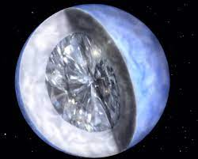
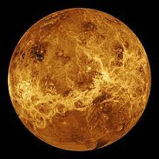
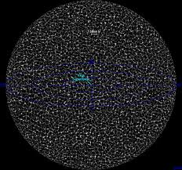

Desde nuestra perspectiva terrestre, el espacio exterior es todo lo que se encuentra fuera del límite que separa la Tierra del espacio. Hay diferentes definiciones de dónde comienza exactamente el espacio exterior. El límite más utilizado es la línea de Karman, que se encuentra a 100 km sobre el nivel medio del mar. A partir de esta marca, el aire se vuelve demasiado delgado para que los aviones regulares puedan volar. En este página podrás leer sobre una pequeña parte de este inmenso espacio.

Planeta de diamante, el primero que se encuentra orbitando una estrella similar al Sol, tan cercano a la Tierra y de un tamaño superior.

Venus es el planeta más caliente del sistema solar y cuenta con el canal más largo en el sistema solar. Se trata del serpenteante Baltis Vallis, un canal formado por lava que, según las mediciones actuales, tiene una longitud de 6.800 kilómetros y una anchura que varía entre 1 y 3 kilómetros.

El Universo observable tiene un tamaño de 93.000 millones de años luz. Esto significa que, teniendo en cuenta que la luz viaja a una velocidad de 300.000 kilómetros por segundo, tardaríamos todo este tiempo en atravesarlo. En otras palabras, mide 10.000.000.000.000 de kilómetros.